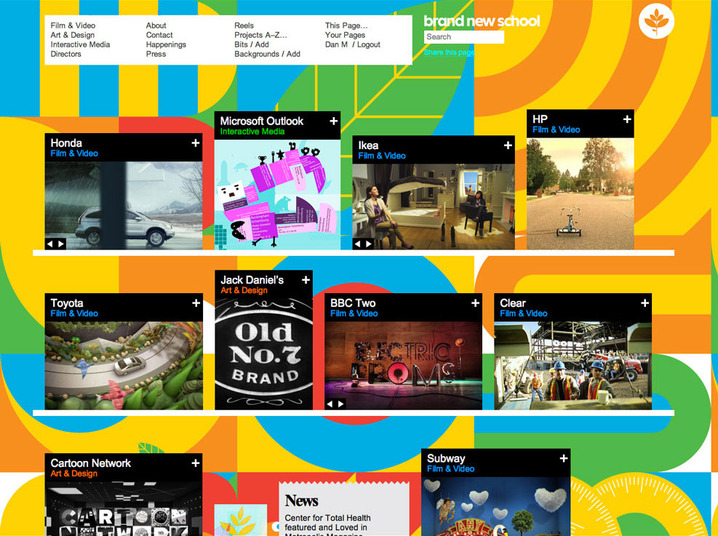
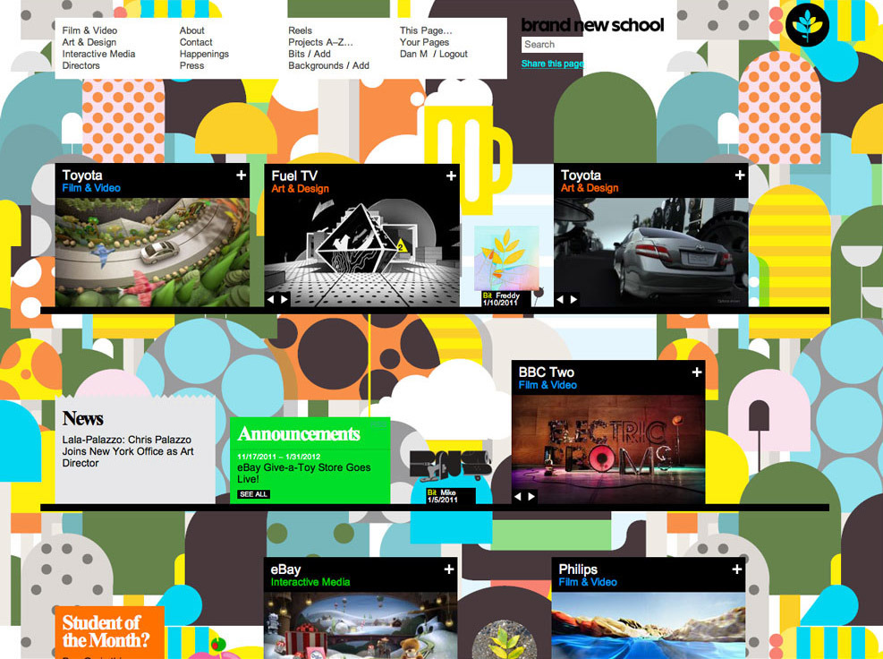
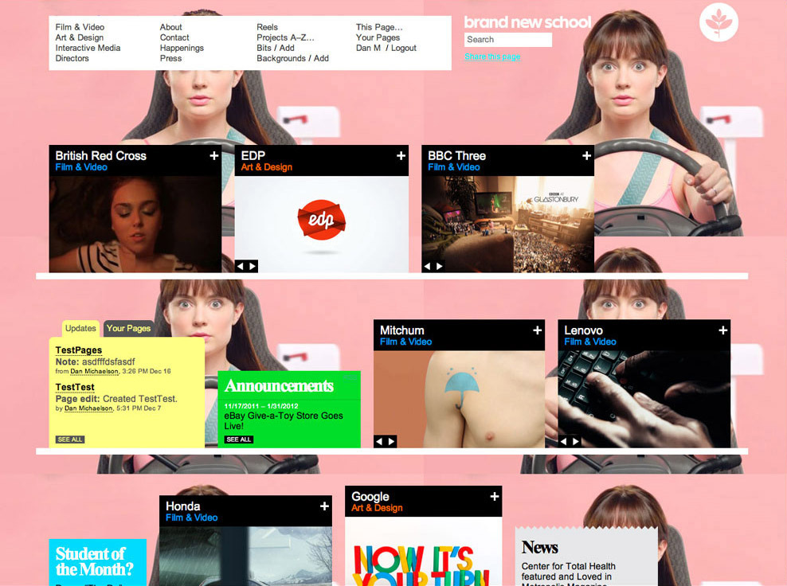
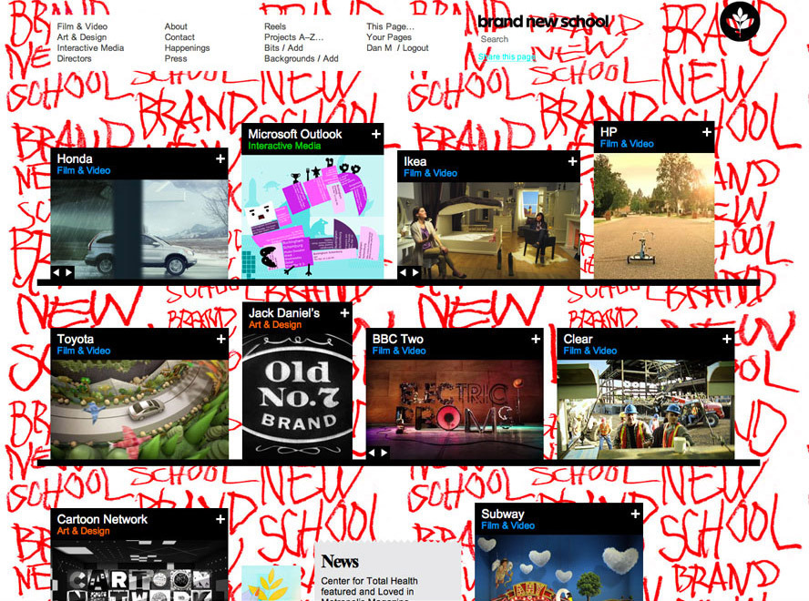
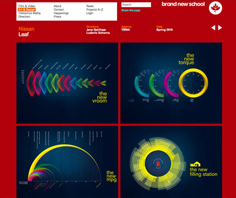

Linked By Air





Welcome to Fusedspace Database
Medium: Website
Client: Brand New School
Year:2011
We launched a site for the production company and design studio, Brand New School. We’re excited that it’s the fourth installation of our modular content management system, Economy – the first three being the Yale School of Art, the Environmental Performance Index, and the Whitney Museum. It’s fun to compare the 1 2 3 4.
A central metaphor for this new site is an infinite set of shelves that holds both finished projects and bits of inspirations and creative expressions that can be uploaded by all BNS employees. In addition, all visitors to the site can re-edit BNS reels and start their own reels, using the same easy-to-use tool we developed for BNS to share custom reels with their clients.
BNS staff can change the backgrounds of the site, at any time.
Our CMS, Economy, allowed Brand New School to develop project pages that often vary greatly from one project to the next, showing each project according to its own needs. This also helps communicate Brand New School’s emphasis on design.
Bits contributed by anyone at BNS can show inspirations, unfinished ideas, characters, snippets of a larger project, etc. Economy’s easy to use page creation and editing interface.